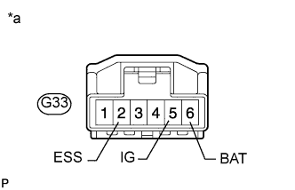

DTC C1625 Обрыв или короткое замыкание в цепи +B датчика угла поворота рулевого колеса |
| Код DTC | Условие обнаружения DTC | Неисправный участок |
| C1625 | Обрыв или короткое замыкание в цепи +B датчика угла поворота рулевого колеса |
|
| 1.ПРОВЕРЬТЕ ЖГУТ ПРОВОДОВ И РАЗЪЕМ (ПИТАНИЕ ВИТОГО КАБЕЛЯ) |
|  |
Отсоедините разъем G33 витого кабеля в сборе.
Измерьте сопротивление в соответствии со значениями, приведенными в таблице ниже.
| Контакты для подключения диагностического прибора | Положение переключателя | Заданные условия |
| G33-2 (ESS) - масса | Замок зажигания в положении OFF (ВЫКЛ) | Менее 1 Ом |
Измерьте напряжение в соответствии со значениями, приведенными в таблице.
| Контакты для подключения диагностического прибора | Положение переключателя | Заданные условия |
| G33-5 (IG) - G33-2 (ESS) | Зажигание включено | 11 – 14 В |
| G33-6 (BAT) - G33-2 (ESS) | Всегда | 11 – 14 В |
| *a | Вид спереди разъема со стороны жгута проводов: (к витому кабелю в сборе) |
|
| ||||
| OK | ||
| ||